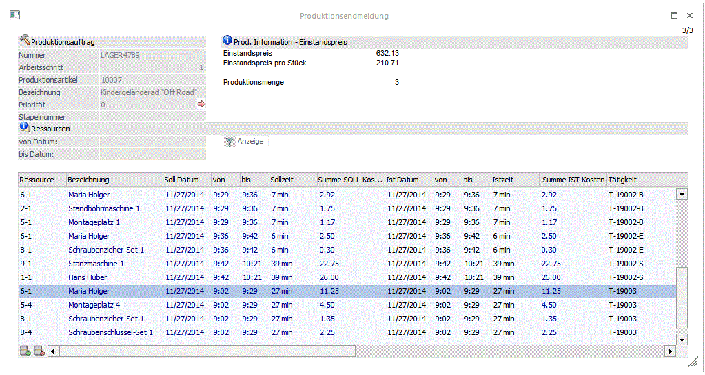

Im 3. Schritt können die Ressourcen eingegeben werden. Im oberen linken Bereich des Fensters werden die Informationen (Nummer und Arbeitsschritt) des aufgerufenen Projektes angezeigt. Darunter werden die Informationen
Ø Produktionsartikel
und
Ø Bezeichnung
angezeigt. Durch einen Klick auf die Bezeichnung kann eine Drill-Down-Funktion ausgelöst werden. Welche Aktion dabei ausgelöst wird, kann über die rechte Maustaste festgelegt werden (die letzte Einstellung wird gespeichert), wobei folgende Optionen zur Verfügung stehen:
ü Aufruf Info
Es wird der Artikel
in der Artikelinfo im Programm WinLine INFO geöffnet.
ü Artikelstamm
Der Artikel wird
in der WinLine FAKT im Artikelstamm geöffnet.
ü Statistik
Es wird die
Artikelstatistik in der WinLine FAKT geöffnet.
ü Artikelbedarfsvorschau
Es wird
die Artikelbedarfsvorschau des Produktionsartikels angezeigt.
Auf der rechten Seite wird der Bereich
Ø Prod. Information - Einstandspreis
angezeigt, wo der Einstandspreis des Projektes und der Einstandspreis pro Stück angezeigt wird. Darunter wird noch die Produktionsmenge angezeigt.
Dieser Infobereich ist ein Formular und kann nach den individuellen Bedürfnissen angepasst werden.

Ø von Datum - bis Datum
Wird hier eine Datumseinschränkung vergeben, so werden nur jene Ressourcen in der Tabelle angezeigt, deren geplanter Einsatz innerhalb dieses Zeitraumes liegt.
Ø Anzeige-Button
Wird dieser Button gedrückt, nachdem eine Datumseinschränkung vergeben wurde, dann wird die Tabelle aufgrund dieser Einschränkung gefüllt.
Hinweis:
Die Felder "Datum von-bis" sowie der "Anzeigen"-Button stehen nicht zur Verfügung, wenn im ersten Schritt die Option "abgeschlossen" aktiviert ist!
Ø Ressource
Die Ressourcen lt. Stückliste werden angezeigt. Bei der IST-Erfassung können die Ressourcen-Nummern editiert werden. Es kann sowohl
ü eine vorgeschlagene Ressource durch eine andere ersetzt werden
ü eine Zeile entfernt werden (durch löschen der Nummer und bestätigen der Zeile)
ü eine neue Zeile (Ressource) erfasst werden
Ø Bezeichnung
Informationsfeld, dass die Bezeichnung der aktuellen Ressource anzeigt.
Ø Soll Datum
Informationsfeld, das anzeigt, zu welchem Datum der Einsatz der Ressource geplant war.
Ø von/bis
Informationsfeld, das den geplanten Zeitraum der Ressourcenverwendung anzeigt.
Ø Sollzeit
Informationsfeld, das die geplante Sollzeit der Ressourcenverwendung anzeigt.
Ø Summe SOLL-Kosten
Informationsfeld, das die geplanten Kosten anzeigt. Diese ergeben sich aus der Multiplikation von den im Ressourcenstamm eingetragenen Kosten/Stunde mit dem Zeitraum der Ressourcenverwendung.
Ø Ist Datum
Eingabe, wann die Ressource tatsächlich verwendet wurde.
Ø von/bis
Eingabe wie lange die Ressource tatsächlich verwendet wurde.
Ø Istzeit
Eingabe der Dauer wie lange die Ressource tatsächlich verwendet wurde. Die Dauer wird automatisch aus den Spalten "von/bis" errechnet. Wird eine andere Dauer in der Spalte eingetragen, ändert sich demnach auch die Zeit in der "bis-Spalte" bzw. in der "von-Spalte".
Hinweis:
Wenn die IST-Zeit schon abgeschlossen worden ist (s. IST-Zeitenerfassung, Reiter "Produktionsauftrag"), kann nur die Dauer der IST-Zeit (Eingabe in Minuten) manuell bearbeitet werden, nicht die Angaben für "Von-Bis" Zeiten.
Ø Summe IST-Kosten
Anzeige der IST-Kosten die sich aus der Multiplikation von Kosten im Ressourcenstamm und Ist-Dauer ergeben.
Ø Tätigkeit
Anzeige, für welche Tätigkeit die Ressource verwendet wurde.
Ø Stundensatz
Anzeige des Stundensatzes der Ressource lt. Ressourcenstamm. Der Stundensatz kann bei der IST-Erfassung noch editiert werden.
Ø Kostenstelle / Kostenart
Hier werden die Kostenstellen und Kostenarten lt. Stammdatendefinition vorgeschlagen und können manuell übersteuert werden.
Die Definition für die Kostenrechnungsübergabe erfolgt in den Prod-Paramtern.
Ø Einplanung %
In dieser Spalte steht ein Wert wenn die Ressource in dieser Zeile zu dem angegebenen %-Satz
Verplant wurde.
Hinweis:
In den PROD Parametern kann eingestellt werden, dass keine Soll-Zeiten bei der Endmeldung vorgeschlagen werden, sondern nur jene Zeiten aus der Istzeitenerfassung verwendet werden.
Ø OK Taste
Speichert die Eingaben. Es werden folgenden Datenbereiche betroffen:
ü Das Fertigprodukt wird im Lager zugebucht.
ü Damit wird der Auftrag zur Lieferung vorgeschlagen (Kundenbestellungen bearbeiten).
ü Die Komponenten werden vom Lager abgebucht.
ü Das Projekt wird als erledigt gekennzeichnet.
ü Das Produktionsjournal wird ausgegeben, z.B. in den Spooler, wenn die Option "Endmeldungsjournal in den PPS-Parameter, Bereich "Ausgabe", aktiviert ist,
Hinweis:
Wurde in den PPS-Parametern als Rückfalls-Kostenstelle für Ressourcen oder im Ressourcenstamm (trotz Warnung) eine Verwaltungs- oder Hilfskostenselle hinterlegt, wird die Produktionsendmeldung mit einer Fehlermeldung abgewiesen.
Hinweis:
Sofern im Fenster "Fremdfertigung" ein Anlieferungslager bei einem Arbeitsschritt eingetragen worden ist, wird bei der Endmeldung eines solchen Fremdfertigungs-Artikels der Artkel zuerst am Fremdfertigungslager zugebucht, anschließend sofort wieder abgebucht und auf das Anlieferungslager wieder eingebucht. In diesem Sinne ist eine lückenlose Lagerbuchungskette vom Fremdfertigungsprozess im Artikeljournal gewährleistet.
Ø Ende Taste
Der Programmbereich wird verlassen.